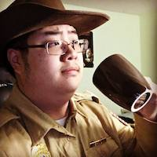

About Us
We are privately owned company, who specialize in extra-dimensional, space
and time travel. Our team is built of pilots, web developers, travel agents,
technicians, and scientists. We our standards are stringent to ensure the
safety and continuity of time and space.
Disclaimer: On the reality which you are viewing this page from may affect
the accuracy of these descriptions.
Tim Van Dermeir (Lead Designer)
Tim graduated with a Masters from Los Angeles Film school and
undergraduate degree in computer science from Northeastern Illinois
University.
Joe Wong (Lead Developer)

Joe graduated with a PhD from Massachusetts Institute of
Technology in Web development. Joe also received a bachelor’s
degree in computer science from Northeastern Illinois University
at the age of 10.
James Koo (Lead Editor)
James graduated with a masters from the University of Michigan in English
and Astrophysics and received a bachelor’s degree in computer science from
Northeastern Illinois University.
Claudiu Moise (Lead Content Writer)
Claudiu Moise graduated from the University of Wisconsin- Madison with a
Ph.D in English. He won the Pulitzer Prize at the age of 5 after writing his first book at the
age of 3.